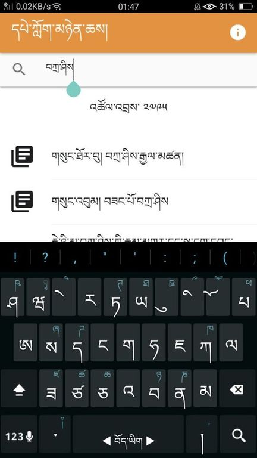
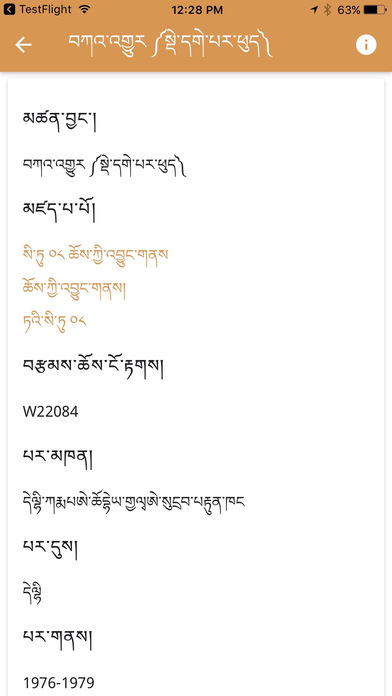
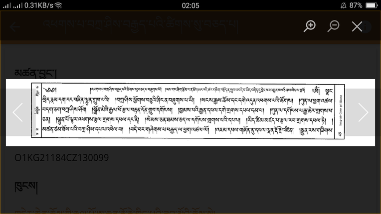

BDRC Library Mobile App
The BDRC Lib app provides direct access to BDRC’s library on mobile devices for BDRC’s global users, particularly in places where access to the Internet is less reliable. It is currently available in the Tibetan language, and will be made available in both English and Chinese in forthcoming releases:

The FRs and DPEs who use iPhones can download the app from the App Store. Those who are on Android can download it from Google Play or click the button below and download it directly:
Offline Access to Metadata
The App is designed to work both on and offline; it enables users to search the vast repository of the BDRC library, which contains more than 350,000 Tibetan titles. This allows DPEs and FRs to look for a work by searching metadata like: 1. the title of the work, 2. titles of texts contained in that work, 3. any of the author's names, 4. publication information.
The search function works whether or not the device is connected to the Internet:

Online Access to Scanned Texts
When online, staff can browse page images of texts. The book will open on the cover page, and the colophon at the end of the book can be accessed easily by swiping from left to right. This makes the identification of a work much easier:

Future Releases
BDRC is planning two additional releases soon, so please stay tuned for updates. The second release will include a library update feature to allow users to easily access the latest data from the BDRC Library database. Soon thereafter, the second release will include localizations in English and Chinese, as well as the ability to download PDF versions of the texts.
Meanwhile, the third release will include collaborative features such as request a text to be scanned, suggest edits to records, suggest a text to include in the library, and a desktop application that will provide direct access to the BDRC Library on the desktop. These collaborative features will allow readers to interact more with the BDRC library workflow and library accessions than was ever possible before.